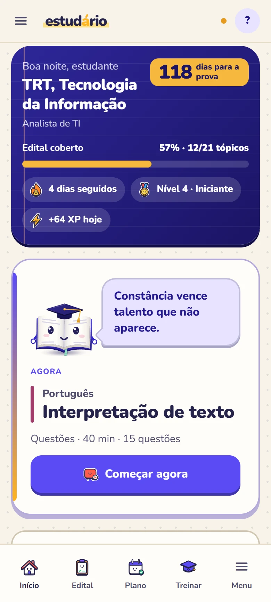
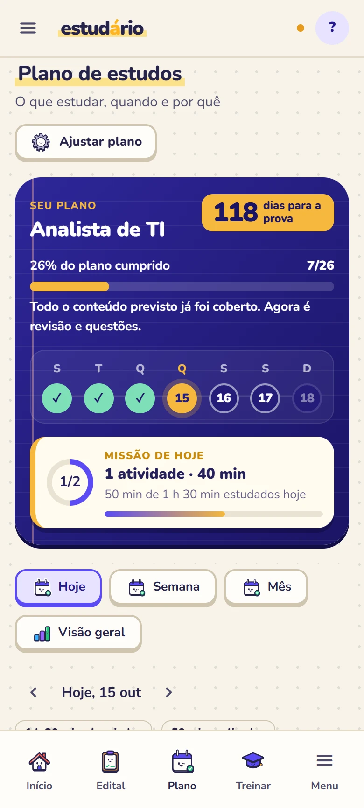
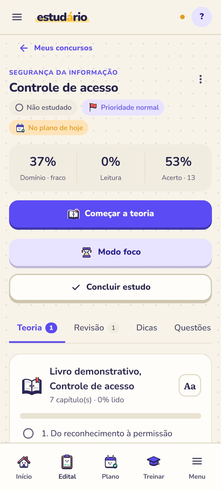
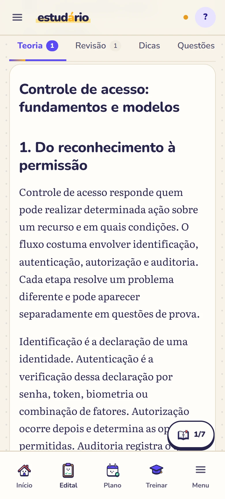
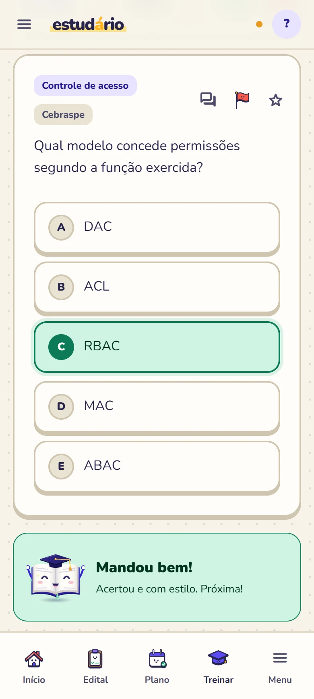
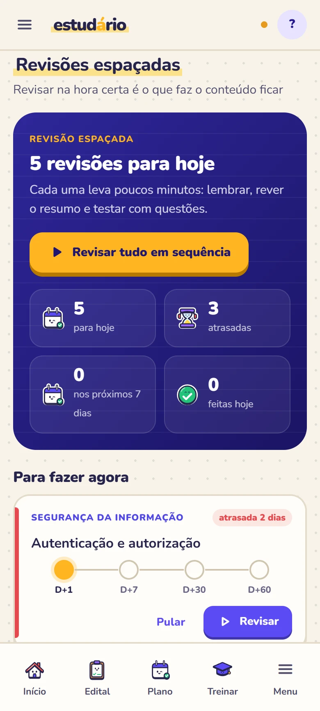
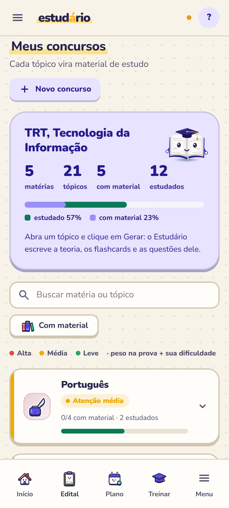

Como funciona
Do terceiro em diante, é o que você faz todo dia.
Escolha o edital
Procure pelo órgão, cargo ou sigla no catálogo. Se o seu não estiver lá, mande o PDF e as matérias saem organizadas.
Diga sua rotina
Quanto tempo por dia, quais dias e a data da prova. O plano usa isso e o peso de cada matéria no edital.
Estude o tópico do dia
Teoria em capítulos, resumo, flashcards, dicas e pegadinhas. Grife o que importa e anote na margem.
Treine e revise
Questões comentadas logo depois da teoria, e o tópico volta nas revisões para não ser esquecido.
O que você encontra no app
Um plano que cabe na sua semana
O plano mostra o que estudar em cada dia, alterna as matérias pelo peso e coloca as questões logo depois da teoria do mesmo tópico.
- Se você atrasar, ele se reorganiza
- O que ficou para trás volta primeiro, sem apagar o que você já fez e sem lotar o dia seguinte.
- Previsão honesta
- Mostra em que dia o edital inteiro é visto no seu ritmo e avisa quando não cabe até a prova.


Material de cada tópico, com as fontes no fim
Para cada tópico do edital: teoria em capítulos, resumo, flashcards, dicas e as pegadinhas mais comuns. Lei e conteúdo vêm de fontes oficiais, listadas para você conferir.
- Leitura com cara de livro
- Fonte de livro, tamanho de letra do seu jeito e uma linha fina mostrando quanto falta.
- Grife e anote
- Selecione um trecho para grifar. Os grifos vão para o seu caderno de estudo e levam de volta ao ponto exato da teoria.


Questões no estilo da sua banca
Cada alternativa tem explicação, inclusive as erradas. A ordem das alternativas muda a cada vez, para você aprender o conteúdo e não a posição da resposta.
- Caderno de erros
- Separa o que você errou pelo conceito, para você ver o que realmente falta.
- Simulados
- Com cronômetro e nota por matéria, no formato do seu concurso.

O que você estudou volta na hora certa
Cada tópico estudado volta no dia seguinte, em 7 e em 30 dias. Na revisão você relembra os pontos principais, revê o resumo e faz algumas questões para fixar.
- Só no dia certo
- Revisar antes da hora enfraquece o efeito; o app espera o dia e avisa quando chega.
- O edital inteiro à vista
- Matérias e tópicos na ordem do edital, com o que pesa mais na prova em destaque.


No app e no navegador
A mesma conta em todo lugar. Estude no ônibus pelo app e continue em casa, no computador ou no tablet, do ponto onde parou.
App para Android
Para estudar em qualquer lugar.
- Funciona sem internet. Leitura, plano, questões salvas e revisões.
- Lembretes do dia. Avisa a hora de estudar e as revisões do dia, e manda o resumo da semana.
- Modo foco. Cronômetro que avisa quando o tempo planejado acabou.
- Sequência, XP e emblemas. Para manter o ritmo todo dia.
- Backup no Google Drive. Opcional, além da cópia na sua conta.
No navegador
Em app.estudario.com.br, no computador, no tablet ou no celular.
- Leitura confortável. Teoria, tabelas e fórmulas com espaço, e o sumário sempre à mão.
- Grife e anote. Selecione o trecho e ele vai para o seu caderno de estudo.
- Treino pelo teclado. A a E (ou 1 a 5) marcam a alternativa e Enter confirma.
- Aviso de material pronto. Troque de aba enquanto o material é preparado.
- Tudo igual ao celular. Plano, edital e progresso se atualizam sozinhos.
Tem iPhone? Use o Estudário pelo navegador, em app.estudario.com.br, com tudo o que o site tem. O app para iPhone está nos nossos planos.
Esse é o Folha
Um livrinho de capelo que estuda junto com você. Ele avisa quando o tempo planejado acabou, comemora os acertos e diz o que vem a seguir. De manhã toma café, à noite põe a touca, e com 7 dias seguidos ganha medalha no capelo. Toque nele!
Armário do Folha: 77 peças em nove categorias (capa, chapéu, óculos, peito, item na mão, aura, marcador, luvas e até um companheiro), liberadas pelas suas conquistas. Alguns visuais:
Planos
No grátis, a matéria do seu plano de hoje é sempre livre, pronta da biblioteca do Estudário. Nos planos, você estuda além do plano e a IA escreve na hora o que ainda não está pronto.
R$ 0
para sempre
- Matéria do plano de hojelivre
- Matérias novas por diaaté 2
- Adiantar o planocom anúncio
- Lotes de questões3 por mês
- Simuladodiagnóstico
- Edital pelo PDF—
- Editais do catálogoaté 5
- Plano de estudo1
R$ 24,90 /mês
ou R$ 249 por ano
- Matéria do plano de hojelivre
- Adiantar o planolivre
- Matérias fora do plano25 por mês
- Lotes de questões10 por mês
- Simulados3 por mês
- Edital pelo PDF2 por mês
- Editais do catálogoaté 15
- Planos de estudo3 por mês
R$ 49,90 /mês
ou R$ 499 por ano
- Matéria do plano de hojelivre
- Adiantar o planolivre
- Matérias fora do plano40 por mês
- Lotes de questões25 por mês
- Simulados6 por mês
- Edital pelo PDF5 por mês
- Editais do catálogosem limite
- Planos de estudo10 por mês
Cada lote traz até 10 questões; cada simulado, até 30. Assinatura pela Google Play, cancela quando quiser. O plano vale no celular e em app.estudario.com.br, na mesma conta.
Dúvidas
Funciona para o meu concurso?
Procure o seu no catálogo, que tem editais de tribunais, polícias, bancos, controle, fiscal e outras áreas. Se não estiver lá, nos planos pagos você manda o PDF do edital e as matérias saem organizadas.
Precisa de internet?
Para estudar, não. Leitura, plano, questões salvas e revisões funcionam offline. A internet só entra para gerar material novo e para o celular e o computador ficarem iguais.
De onde vem o material?
Muitos assuntos já vêm prontos da biblioteca do Estudário. Os demais são escritos a partir de fontes oficiais, como a legislação e os órgãos públicos, e passam por uma segunda revisão antes de chegar até você. As fontes ficam listadas no fim de cada material.
Tem para iPhone?
Ainda não há app para iPhone, mas ele está nos nossos planos. Enquanto isso, abra app.estudario.com.br no Safari do iPhone e entre com a sua conta Google: plano, edital, material e questões ficam lá, iguais ao app do Android.
Dá para usar no computador ou no tablet?
Dá. Entre em app.estudario.com.br com a mesma conta Google do celular. O que você estuda em um aparece no outro sozinho.
Onde ficam meus dados?
No seu celular. Se você entrar com a conta Google, uma cópia fica na sua conta no servidor do Estudário, para o site mostrar o mesmo estudo; só você acessa essa cópia. Detalhes na política de privacidade.
Como cancelo a assinatura?
Pela Google Play, em Pagamentos e assinaturas. O plano continua até o fim do período pago e depois a conta volta para o grátis, sem perder o que você estudou.
Comece pelo edital do seu concurso.
Baixe grátis, escolha o edital e o plano da semana já fica pronto.